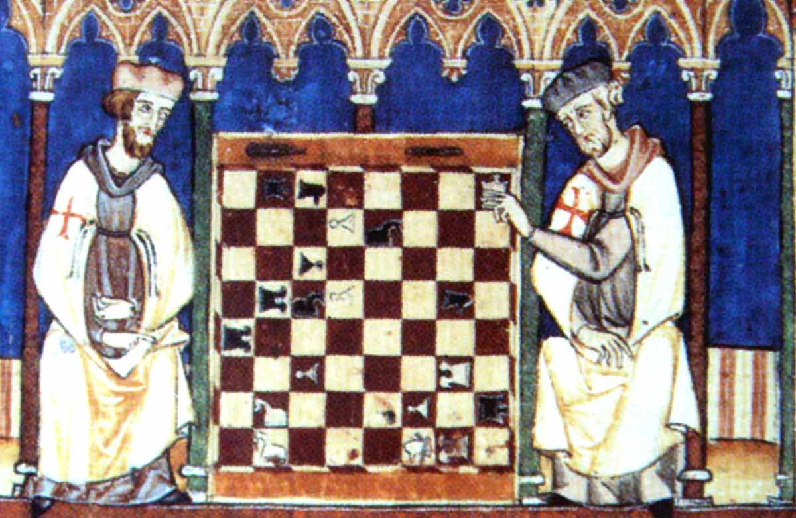
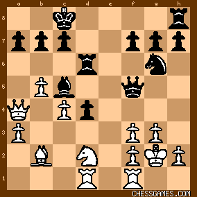

Chess is an ancient strategy game that has roots of India origin. It is played by two people on an 8×8 grid. A box size board that is officially used for playing mightiest moves. The main principle behind chess is to capture the throne by checkmating the opponent's king.
In the world of chess, it is commonly known as "Checkmate is a position where the king is trapped in an inescapable position where he cannot do anything else giving up. Chess is a very popular game which is shared by all age groups. It is generally known as a game of minds. People get a chance to showcase their battlefield and organizational skills to capture and win.

Fig 1.0 Kings playing chess in early era
History
The history of chess almost goes 1500 years back in time. It sets its origins in India in the 6th century AD and travels to Persia. Back in that century when Arabs conquered Persia, they took the game and the game spread among the Muslim world. Through Moorish conquest to Spain, the game spread to Southern Europe.
In Europe, the game was modified in the 15th century. The modern game is based on this change. In the second half, the modern tournament was conducted. The chess clock was first used in the 19th century.
The very first World Championship was held in 1886.
The twentieth century saw advances in chess theory, and also the institution of the globe Chess Federation Chess engines (programs that play chess), and chess became necessary

Chess board
Origins of the game
Chess, as we know it today, was born out of the Indian game chaturanga before the 600s AD.
The game unfold throughout Asia and Europe over the approaching centuries, and eventually evolved into what we know as chess around the 16th century.
One of the first masters of the game was a Spanish priest named Ruy Lopez. Although he didn't invent the opening named after him, he analyzed it in a book he published in 1561.
Chess theory was thus primitive earlier that Lopez advocated the strategy of twiddling with the sun in your opponent's eyes